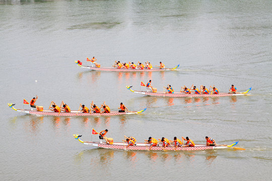

History of Boat Racing
Boat racing has ancient roots, with origins dating back to the Nile and Roman Empire. It gained modern popularity in the 18th century in England. Today, it's a recognized Olympic sport and recreational activity worldwide.
Types of Boat Races
- Rowing (Olympic sport)
- Canoeing and kayaking
- Dragon boat racing
- Powerboat racing
- Sailing races and regattas
Rules & Equipment
- Depends on the type of race (rowing, sailing, etc.)
- Standard equipment includes boats, paddles or oars, life jackets, and timers
- Safety checks and strict lane rules for fairness
- Team races emphasize rhythm, coordination, and endurance
Famous Boat Racing Events
- The Oxford-Cambridge Boat Race (UK)
- The America's Cup (sailing)
- Henley Royal Regatta
- Dragon Boat Festivals (Asia)
- Olympic Rowing & Canoeing
Famous Athletes
- Steve Redgrave (UK) – 5-time Olympic gold medalist
- Mahe Drysdale (New Zealand) – Olympic rowing champion
- Birgit Fischer (Germany) – kayaking legend
- Valent & Martin Sinković (Croatia)
Benefits of Boat Racing
- Boosts full-body strength and endurance
- Improves teamwork and coordination
- Enhances cardiovascular fitness
- Builds focus and rhythm
- Connects with nature and water bodies
Global Popularity
Boat racing is celebrated in many cultures — from Olympic arenas to traditional festivals. Countries like the UK, USA, Germany, and China lead in various styles. It’s both a competitive sport and a cultural tradition.